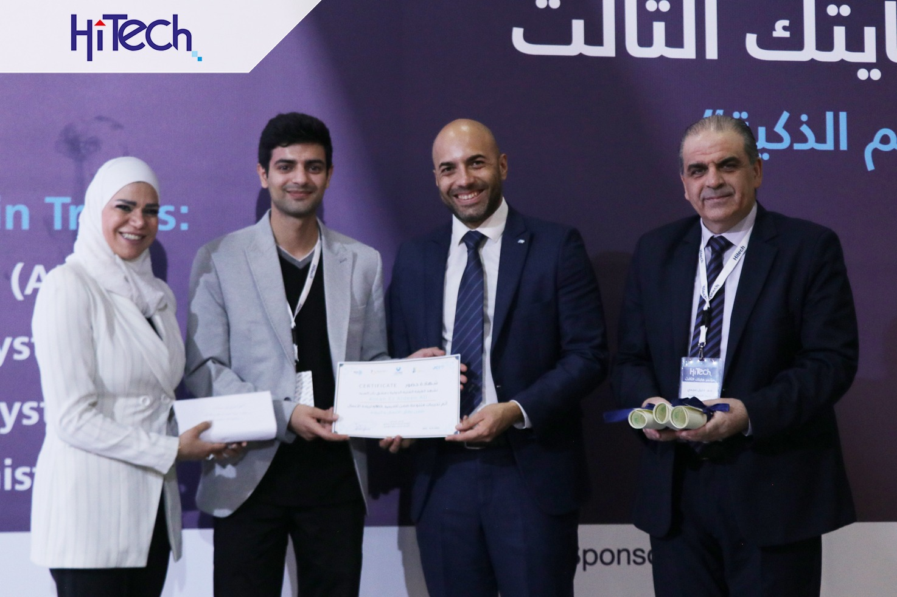
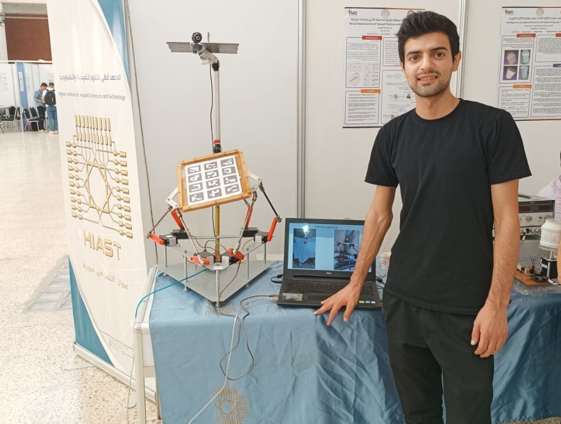
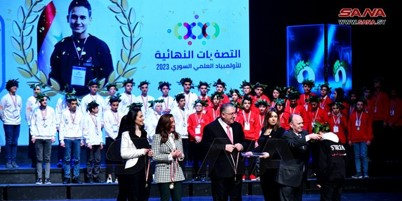

I completed my Bachelor’s degree at the Applied Sciences & Technology (HIAST) in October 2024, following my High School degree at the National Center for the Distinguished in 2019. My academic interests focus on control theory, adaptive systems, and machine learning.
Skills
I have experience in both hardware and software domains. On the hardware side, I’ve worked with microcontrollers (Arduino, Atmega(8, 16, 328), sensors, actuators, robotic manipulators. On the software side, I’m skilled in Python, MATLAB, C++, and familiar with tools like ROS, OpenCV, and TensorFlow. My control systems work often includes simulations and real-time implementations.
Participation
3rd Hitech Conference on Intelligent Systems

I participated in the HiTech 3rd Conference on Intelligent Systems with my forth-year project: "Theoretical Study and Practical Comparison of 3RRR Planar Parallel Manipulator Control." The project explored data-driven vs. classical control methods for a robotic manipulator. Awarded 1st place among university projects across Syria, the conference was a transformative experience—presenting research, receiving expert feedback, and connecting with leading minds in AI and robotics.
Participation
The Faculty of Mechanical and Electrical Engineering Exhibition (FMEE)

I showcased my HIAST graduation project, "Adaptive Neural Control of
a Stewart Platform with Rotary Servos," at the Faculty of Mechanical and
Electrical Engineering (FMEE) pavilion during SyriaPlast 2024. The project
tackled robotic control under dynamic uncertainties (e.g., motor backlash)
through:
- A neural-based adaptive controller replacing traditional
inverse kinematics.
- Data-driven vs. classical control comparisons for precision.
- Novel algorithms for hysteresis compensation and data collection.
Guitar tutor
HIAST Guitar Club
I've been plyaing guitar for since 2019. I have participated as a Guitar tutor in HIAST Guitar Club.
I love playing classical pieces, and I enjoy listening to Blues, Metal, and old Arabic songs.
Team Member
Syrian National Physics Olympiad
